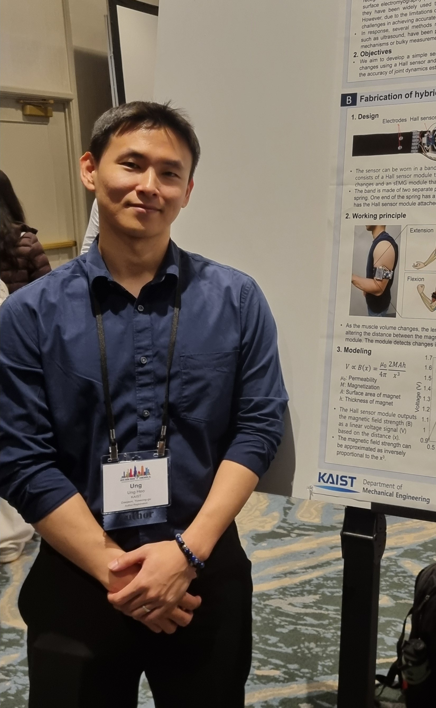

Ung Heo
Postdoc @ KIST Bionics Research Center
I am a robotics engineer focusing on human-assistive robotic systems, power sources for robotic actuation, and human–machine interfaces. I develop integrated robotic platforms by combining mechanical design, actuation systems, sensing, and experimental evaluation.